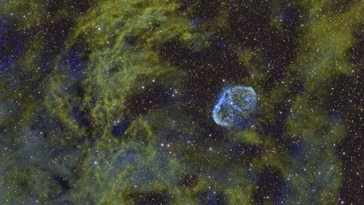
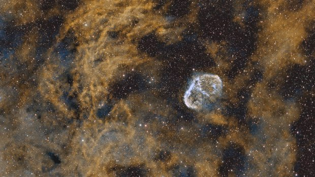

Image étirée
Outil Narrowband palette
Fausses couleurs pour une pile bi-bande (Hα et OIII) : huit palettes, dont SHO, HOO et Foraxx, choisies sur une planche contact.
Comment s'en servir
- Ajouter l'outil depuis Tools, sur une image étirée. Sa place est sur la couche nébuleuse, après Separate stars : les étoiles gardent alors leurs propres couleurs.
- Contact sheet : les huit palettes sont montrées sur l'image, côte à côte. Cliquer l'une d'elles : neuf variations suivent, avec moins ou plus d'OIII et des tons chauds plus rouges ou plus jaunes, par pas plus fins à chaque clic.
- Cliquer celle du milieu pour la garder et refermer la planche, puis Apply.
Whole image / Detail : les vignettes montrent l'image entière, ou la partie de l'image où Hα et OIII sont forts tous les deux, là où les palettes diffèrent le plus.
Réglages
- Contact sheet
- Toutes les palettes sur l'image, côte à côte ; puis des variations autour de celle choisie.
- Palette
- Gold and blue (par défaut), SHO, Foraxx, Copper and teal, HOO, Natural, Foraxx HOO, HOS (CFHT). Les deux palettes Foraxx sont dynamiques : leurs mélanges suivent les raies elles-mêmes.
- OIII
- La clarté de l'OIII à côté du Hα. Au milieu, les deux sont au même niveau ; à droite l'OIII est jusqu'à quatre fois plus clair, à gauche jusqu'à quatre fois plus faible.
- Warm tones
- Tourne les couleurs chaudes (or, orange, rouge) jusqu'à 40° : à droite vers le jaune, à gauche vers le rouge. Les bleus et les turquoises ne bougent pas.
- Sulfur
- Palettes à soufre seulement : la quantité de soufre fabriquée, en part du Hα.
- Sulfur away from OIII
- De combien le soufre baisse là où l'OIII domine. À 0, il suit le Hα partout.
- Amount
- Le mélange de la palette avec l'image telle qu'elle était : 100 % est la palette seule.
Quand s'en servir
Sur une pile prise avec un filtre bi-bande, comme le filtre LP d'un Seestar. Un tel filtre n'enregistre pas de SII : les palettes à soufre en fabriquent un à partir du Hα, plus fort là où il y a moins d'OIII. C'est un rendu, pas une mesure.
Image
Travaille uniquement sur une image étirée.
Exemples

 sanspalette SHO
sanspalette SHO

sanspalette Gold and blue